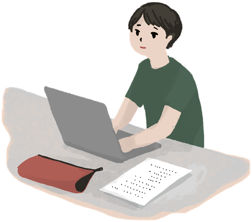

METHODS
入試方式を知る
SCHEDULE
受験までの学習スケジュール（例）
{{ t.when }}
{{ t.title }}
{{ t.desc }}
TIME MANAGEMENT
1日の時間の使い方（例）
平日と休日で学習の進め方を分けると、無理なく続けられます。下の例を参考に、自分の生活リズムに合わせた計画を立ててみましょう。

METHODS
{{ t.title }}
{{ t.desc }}
TIME MANAGEMENT
平日と休日で学習の進め方を分けると、無理なく続けられます。下の例を参考に、自分の生活リズムに合わせた計画を立ててみましょう。
